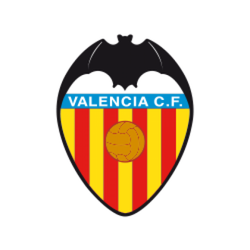

El Valencia Club de Fútbol se fundó oficialmente el 18 de marzo de 1919, después de que un grupo de aficionados decidiera crear un equipo con el nombre de su ciudad. Su primer campo fue Algirós y en 1923 se trasladó a Mestalla, un estadio que ha acompañado los momentos más importantes del valencianismo. Tras ascender a Primera en 1931, el club construyó una historia de grandes equipos y goleadores. La delantera eléctrica de los años cuarenta, Mario Kempes y las generaciones que alcanzaron las finales de Champions de 2000 y 2001 forman parte de esa memoria. Las Ligas de 2002 y 2004 y la Copa de la UEFA de 2004 marcaron otra etapa de éxito. Los colores blanquinegros, el murciélago del escudo y la relación con la ciudad son señas de identidad de una entidad que celebró su centenario ganando la Copa del Rey de 2019.
